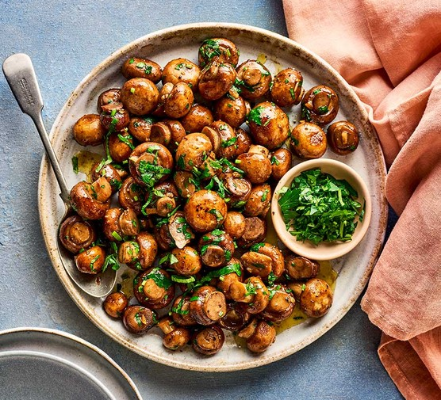

Garlic Mushrooms

These garlic mushrooms are easy to make by sautéing sliced mushrooms in butter with red wine. Delicious with grilled steaks or on top of toasted bread for a tasty appetizer.
Garlic Mushrooms are highly nutritous and are easy to make with relativley cheap ingredients. Garlic Mushrooms are also extremley delicious
Ingredients
- 1 tablespoon butter
- 2 pounds sliced fresh mushrooms
- 4 cloves garlic, minced
- teaspoon dried basil
Steps
- Heat butter in a skillet over medium heat.
- Add mushrooms and garlic
- cook and stir until mushrooms are a light golden brown and liquid has evaporated, about 10 minutes. Stir in basil.
- stir well
- serve